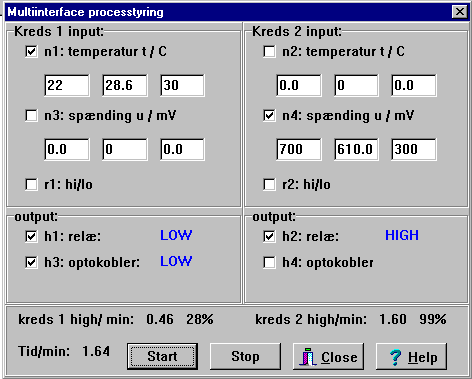

Kreds 1 vil sætte udgangene high indtil temperaturen er over 30 °C. Så sættes udgangene low og de forbliver low indtil temperaturen er under 22 °C. Jævnfør et varmelegeme. På billedet har temperaturen været over 30 °C.
Bemærk, at i kreds 2 er den første spænding større end den anden. Virkningen er derfor modsat. Nu sættes udgangen high når indgangen er større end startværdien og går low når indgangen kommer under stopværdien, og går først high igen, når indgangen atter er større end startværdien. Jævnfør et køleskab.
Man skal vælge mindst ét input og ét output (i samme kreds).
Bemærk også oplysningerne om high/min: 0.46 28%
og den samlede procestid.